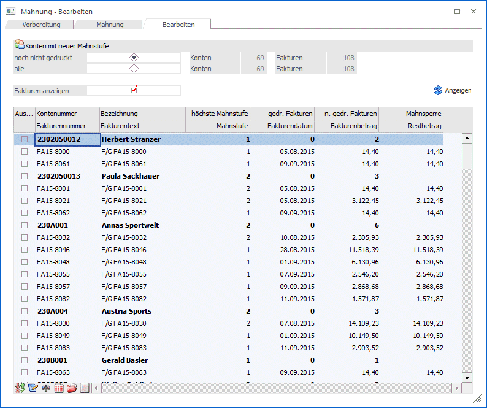
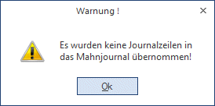
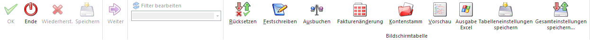

Im Mahnungsfenster - Register Bearbeiten kann nach Durchführung eines temporären Mahnlaufes noch eine Bearbeitung der Mahnungen durchgeführt werden bevor die Mahnstufen fix geschrieben werden.

Ø Konten mit neuer Mahnstufe
ü noch nicht gedruckt:
Die Summe
aller Konten und der Offenen Fakturen die noch nicht gedruckt wurden und
aufgrund des temporären Mahnlaufes bearbeitet werden können, wird angezeigt.
ü
Alle:
Anzeige der Summe ALLER
Konten und Offenen Posten die mit einem temporären Mahnlauf erzeugt wurden. Pro
Journalzeile wird der Bearbeitungsstatus angezeigt.
Ø Fakturen anzeigen
Über diese Option werden zusätzlich zu den Kontenzeilen auch die einzelnen Fakturen in der Tabelle angezeigt. In den Fakturenzeilen werden dann Fakturennummer, Fakturentext, Mahnstufe, Fakturendatum, Fakturenbetrag und Restbetrag angezeigt.
Ø
Durch Betätigen des Anzeigen-Buttons werden alle Informationsfelder nach Durchführung einer Mahnvorbereitung befüllt. Ebenfalls kann die Bildschirmanzeige im Zuge der Bearbeitung laufend aktualisiert werden.
Hinweis
Werden über die Fakturenänderung bei den Fakturen eines Kontos die Checkboxen "neue Mahnstufe" deaktiviert (um evtl. Mahnstufen manuell zu verändern), so wird dieses Konto nicht mehr in der Tabelle angezeigt.
Je nach gewähltem Radiobutton erfolgt in den Tabellen die Anzeige für die "noch nicht gedruckten" oder "alle" Konten mit Fakturen die aufgrund des Mahnlaufes eine neue Mahnstufe erhalten.
Wenn aufgrund der Prüfung der Mahnparameter keine Journalzeilen in das Mahnjournal übernommen wurden, erfolgt keine Anzeige und Sie erhalten eine Informationsmeldung angezeigt.

Informationsfelder
Pro Kontozeile stehen folgende Informationen zur Verfügung:
Ø Auswahl
Durch Aktivieren der Checkbox "Auswahl" ist eine Mehrfachselektion von Kontenzeilen möglich. Dabei ist zu beachten, dass bei Aktivieren einer bzw. mehrerer Zeilen nur mehr die Optionen "Festschrieben" und "Rücksetzen" zur Verfügung stehen um diese betroffenen Zeilen zu "bearbeiten".
Ø Kontonummer
Anzeige der Kontonummer.
Ø Bezeichnung
Andruck der Kontobezeichnung.
Ø höchste Mahnstufe
Anzeige der höchsten vorhandenen Mahnstufe. Die Anzeige ist bis zur höchsten in den Mahnparametern eingetragenen Mahnstufe möglich.
Ø gedr. Fakturen
Hier erfolgt eine Anzeige, wenn für noch nicht gedruckte Fakturen die Mahnstufen festgeschrieben werden, ohne die Originalmahnung selbst auszudrucken.
Ø n. gedr. Fakturen
Die Summe der Offenen Posten, für die noch keine Originalmahnung gedruckt wurde, wird angezeigt.
Ø Mahnsperre
Hier erfolgt eine Kennzeichnung, falls in den Kontenstamm gewechselt wurde und für ein Konto die Mahnsperre gesetzt wurde. Im Personenkontenstamm kann zusätzlich ein Ablaufdatum für die Mahnsperre eingetragen werden. Dieses Feld wird bei der Mahnvorbereitung geprüft und gegebenenfalls wird die Checkbox "Mahnsperre" zurückgesetzt.
Ø Fakturennummer
Anzeige der Fakturennummer
Ø Fakturentext
Anzeige des OP-Textes
Ø Mahnstufe
Anzeige der Mahnstufe, welche die Faktura beim Originaldruck der Mahnung oder Festschreiben der Mahnstufe erhalten würde.
Ø Fakturendatum
Anzeige des Fakturendatums
Ø Fakturenbetrag
Anzeige des Fakturenbetrags
Ø Restbetrag
Existieren Teilzahlungen zu dieser Faktura, wird hier der Restbetrag angezeigt.
Werden die durch den Mahnlauf erzeugten Journalzeilen markiert, so werden die Bearbeitungsbuttons aktiviert. Die in der Tabelle angezeigten Werte (gedruckte, nicht gedruckte, Mahnsperre) werden beim Verlassen der Journalzeile aktualisiert.
Buttons

Ø Ende
Mit der ESC-Taste wird das Fenster geschlossen.
Ø Rücksetzen
Die temporären Mahnstufen für die Fakturen des Kontos werden gelöscht, d. h. für das Konto wird keine Mahnung gedruckt, es wird beim nächsten Mahnvorbereitungslauf wieder berücksichtigt.
Ø Festschreiben
Die Spalte "Mahnstufe" wird gefüllt, als wäre eine Mahnung im Originaldruck für das Konto gedruckt worden, d. h. eine noch nicht gedruckte Faktura wird in eine gedruckte Faktura umgewandelt ohne ein Mahnblatt drucken zu müssen.
Ø Ausbuchen
Das Fenster "Fakturenausgleich manuell" wird geöffnet. Im Fenster Fakturenausgleich manuell können Sie offene Fakturen gegeneinander ausgleichen oder Fakturenbeträge gegen Skonto ausbuchen.
Ø Fakturenänderung
Das Fenster Fakturenänderung wird geöffnet und Sie können direkt in diesem Mahnstufen und Zahlungskonditionen editieren.
In der Fakturenänderung kann ebenfalls festgelegt werden, ob für bestimmte Fakturen die Mahnstufe beim Druck nicht erhöht werden soll.
Ø Kontenstamm
Der Kontenstamm wird geöffnet um z.B. für ein Konto sofort eine Mahnsperre setzen zu können.
Ø Vorschau
Für noch nicht gedruckte Mahnungen kann eine Vorschau für das ausgewählte Konto angezeigt werden.
Hinweis:
Steht der Focus auf der Kontenzeile, stehen wie bisher alle Buttons zur Bearbeitung zur Verfügung, wenn für das Konto noch nicht gedruckte Fakturen vorhanden sind. Ist der Focus in einer Fakturenzeile, stehen die Buttons "Rücksetzen" und "Festschreiben" zur Verfügung und die ausgewählte Aktion wird nur für die selektierte Faktura durchgeführt.